2026.09 — 2028.07 expected
The Chinese University of Hong Kong, Shenzhen
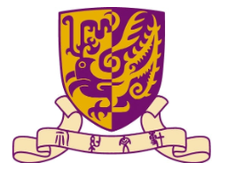
AI MPhil · In progress
School of Artificial Intelligence. My interests include Agent engineering, tool calling, retrieval, and long-term memory.
CUHK-Shenzhen · AI MPhil
Yanzihan QiuDavid
AI MPhil student at The Chinese University of Hong Kong, Shenzhen, and a Xiamen University graduate. I independently built EduPilot, a teaching agent that connects textbook study, online coding, automated grading, and feedback.
I am interested in reliable agents, including workflow and tool boundaries, retrieval, long-term memory, and recovery after failure. My research also explores model selection and traceable information extraction.
Seeking an AI applications or Agent engineering internship
01 · Academic
2026.09 — 2028.07 expected

AI MPhil · In progress
School of Artificial Intelligence. My interests include Agent engineering, tool calling, retrieval, and long-term memory.
2026.03 — 2026.06
Net-zero carbon fuels exchange · Low Carbon-UK College
Led a team that won Best Group Presentation with Distinction.
2022.09 — 2026.07
BEng (Honours) in New Energy Science and Engineering
School of Energy and Chemical Engineering, Malaysia campus · CGPA 3.53 / 4.00
A grades in courses including Materials Science, Calculus, and AI and Simulation. Academic-year third-class scholarship, Dean’s List and Merit Final Year Project awards.
02 · Selected work
Two projects I develop independently, from task design and tool integration through validation.
Xiamen University industry collaboration · A teaching agent for learning to code
I led requirements, Agent architecture, and full-stack implementation, connecting textbook study, Python coding, server-side grading, and feedback. EduPilot has been used in two classes at Xiamen University’s School of Informatics.
GitHub shows an early iteration. The recordings below show features from the university-industry project after further development.
62.5% fewer calls over a fixed 60-turn synthetic dialogue. The metric covers only model calls for memory maintenance.
Verified server results update the mistake log and topic progress.
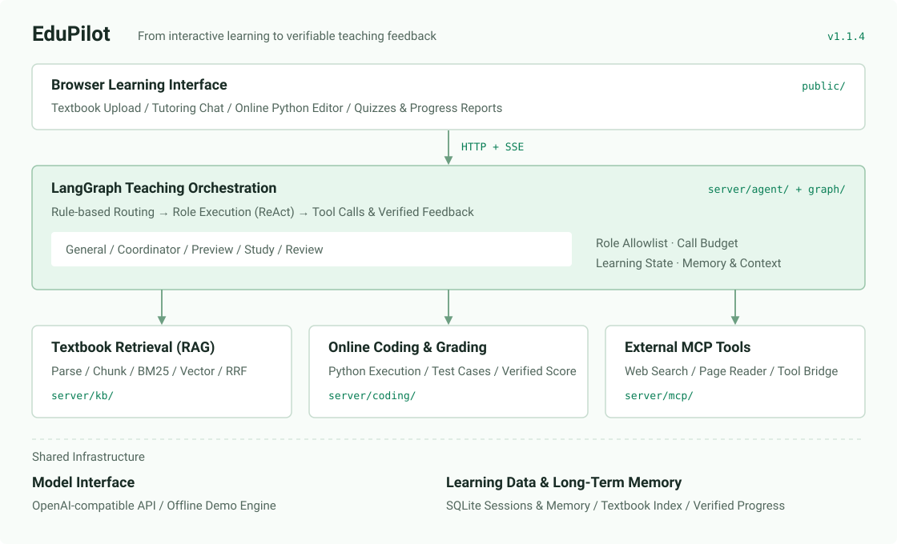
Rule-based routing assigns general, coordination, preview, study, and review tasks. Each role chooses its tools. Formal assessment is separate from tutoring, and progress updates use verified server results.
External MCP tools share management with textbook search and grading. Parameter schemas, role allowlists, web access authorization, and per-turn call limits constrain tool use. Failures return recognizable results.
Cancellation propagates through SSE, agents, model requests, and MCP calls. It releases the session queue, retains completed grades, and isolates request state.
Long-term facts retain quotations, positions, hashes, and source sessions, including correction history. Generated lesson material is checked against its structure and source before publication. Failed builds retain the previous snapshot.
Verification covers functional behavior, HTTP/SSE, and MCP stdio, focusing on tool calls, request isolation, and state recovery.
Recordings show excerpts from real API workflows. Swipe to browse.
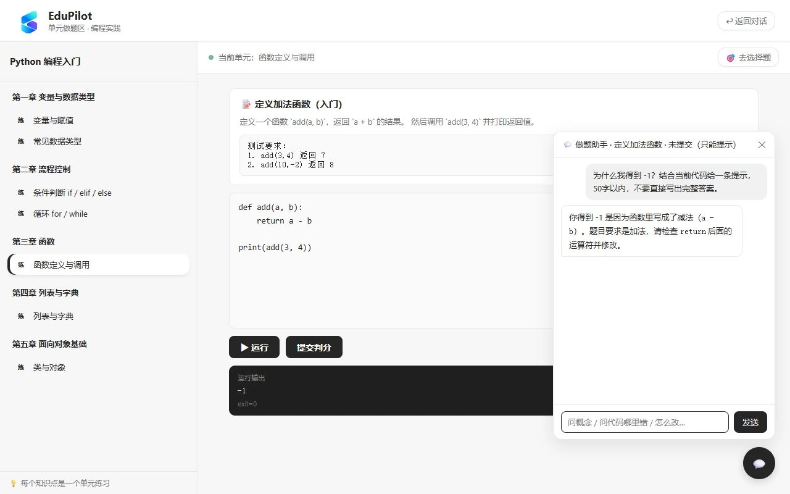
Edit, run, and grade Python online. The coding tutor uses the current problem and code to offer hints.
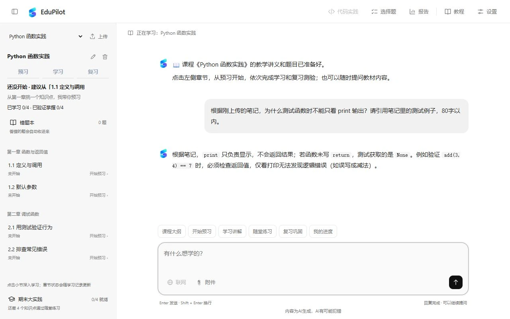
Upload learning material to generate chapters, topic notes, and exercises, then ask questions about the source.
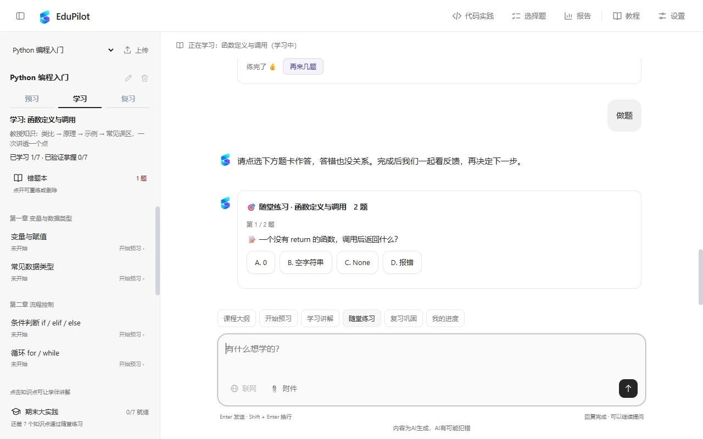
Preview, study, and review have distinct paths. Answer questions in the conversation and progress based on checks.
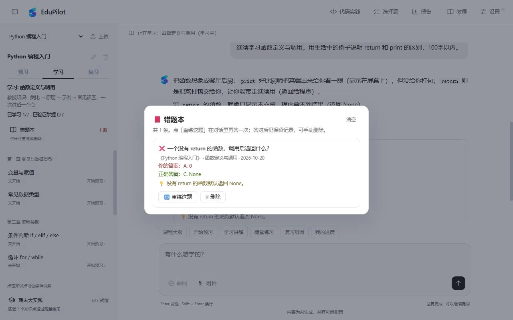
Keep your answer, the correct answer, and its explanation. Reopen the interactive question directly from the mistake log.
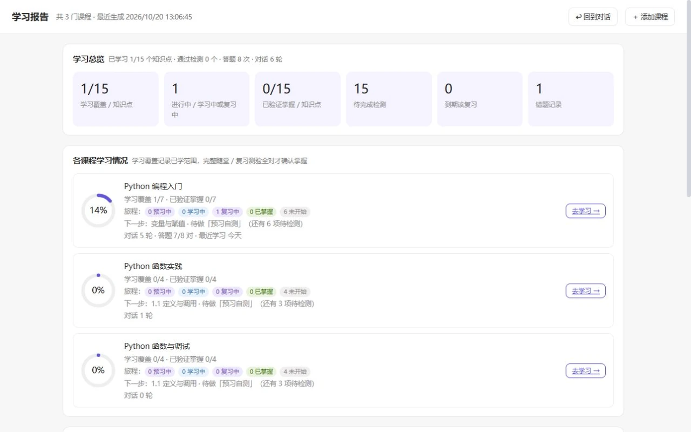
Track coverage, verified mastery, and outstanding assessments, then return directly to the course.
Layered cathode literature · I owned the text pipeline, figure splitting, and model fine-tuning
The project converts experimental steps, material properties, and compound figures into verifiable structured information. The text pipeline is operational. The vision workflow splits compound figures and fine-tunes Qwen3-VL-8B to improve domain image recognition.
7,000+papers processed by the text pipelineEnd-to-end pipeline in operation
Identify products and full synthesis procedures
Organize synthesis, performance, and morphology
Use error attribution to improve extraction
Preserve relationships among papers, samples, and evidence
Bounding-box detection, human-reviewed cropping, and PDF region recovery feed vision-language model fine-tuning.
Gain 30.5 percentage points
The image index covers 2,689 DOIs and 32,614 readable image files. Split subfigures retain their positions for individual review.
A frozen sample registry binds facts to sources and validates cache identity. Ambiguous records go to review to avoid mixing samples and publications.
The JEV-specific model was evaluated on 180 development papers and 180 held-out papers. I tracked incorrect exclusion risk, review rate, latency, and real API costs. AI-assisted reference labels still need domain review.
The text workflow extracts structured facts and evidence. The image workflow handles figure splitting, subfigure positioning, and domain recognition. Each has its own iteration and evaluation.
The Chinese University of Hong Kong, Shenzhen · Advisors: Professors Mingjian Zhang and Shunning Li
03 · Publication
First author · AI for Science · IOP Publishing
Reviewed 164 papers and compared 25 core studies on Transformer architectures, input features, cross-condition generalization, evaluation, and deployment. Processed NASA and CALCE data and compared Transformer and CNN models using RMSE, MSE, and R².
DOI: 10.1088/3050-287X/aeb31b04 · Industry
2025.08 — 2025.09
Thermal Simulation Engineer · Power Battery R&D
Built a COMSOL battery thermal model independently and cross-checked it against Ansys Fluent and experimental data, with error within ±15%.
2025.03 — 2025.08
Performance Development Engineer · Building Technologies R&D
Built a workflow on an internal AI platform for image recognition, information routing, and work-order creation and archiving. I handled node design, field mapping, and training. A typical task went from 20 minutes by hand to about 4 minutes, and training reached over 110 attendances.
Analyzed competing products, major components, and costs, and produced a structured 40-page report.
05 · Recognition
Academic and research awards during my undergraduate studies. Select any certificate to view full size.
April 2026 semester
Xiamen University Malaysia
April 2026 semester
Ionogel electrolyte and anode compatibility study
March–June 2026 exchange
Distinction · Team lead
Shanghai Jiao Tong University, Net Zero-Carbon Fuels
September 2025 semester
Xiamen University Malaysia
2022–2023 academic year
Distinction Award
Xiamen University Malaysia
06 · Beyond the screen
Materials experiments, engineering validation, and hands-on projects outside work.
Studied how salt concentration, curing time, additives, and thickness affect interface and transport properties in UV-cured AAm / DMAAm–TFSI ionogels. I ran EIS, galvanostatic cycling, and CR2032 half-cell tests on graphite, MCMB, hard carbon, and silicon anodes.
Final-year project, phase II: Optimization and Anode Compatibility Evaluation of UV-Cured AAm/DMAAm Ionogel Electrolytes for Lithium-Ion Half-Cells. Received the Merit Final Year Project II Award.
Xiamen University Malaysia · Advisor: Professor Nengping Fan
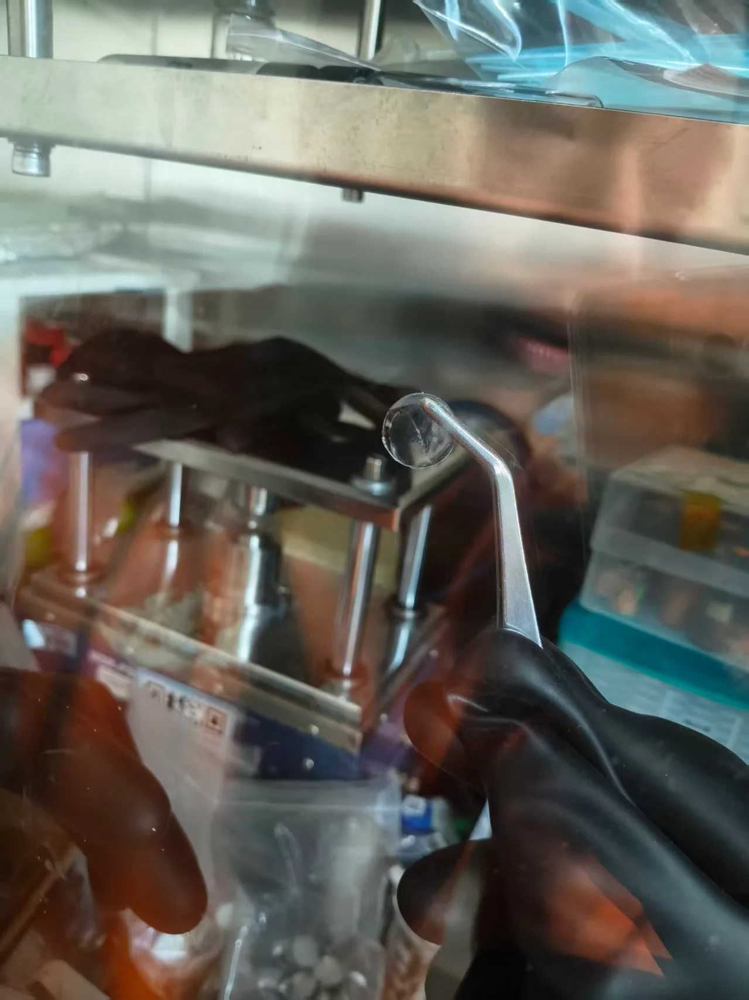
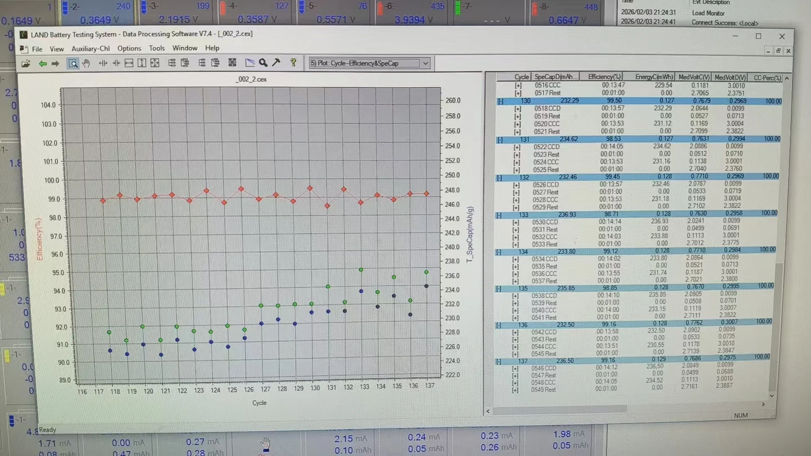
Designed a projection lamp with replaceable pattern modules by adapting an open-source body. I modeled and fitted parts with Hunyuan 3D and Shapr3D, then printed, assembled, and tested the lamp on a Bambu Lab X1 Carbon.
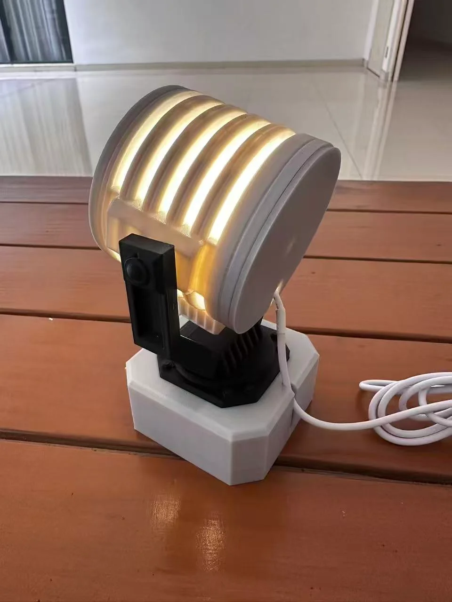
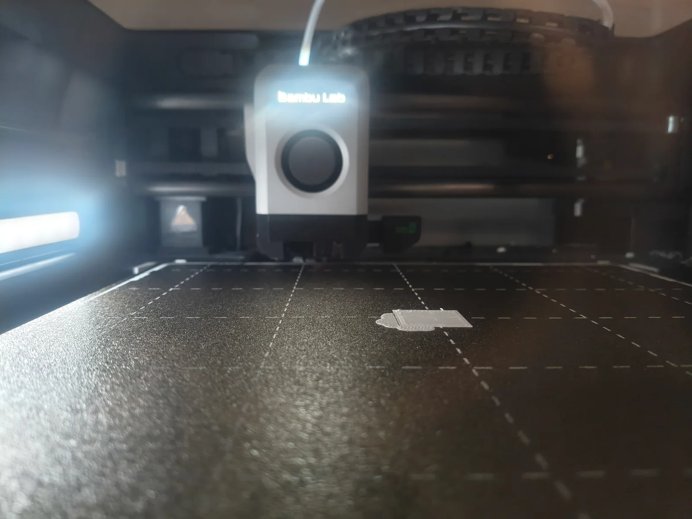
Built a platform combining T-type thermocouples and infrared measurement, ran over 20 experimental groups, and cleaned and analyzed over 100,000 data points. I contributed to the correction model and test design, improving measurement accuracy by 32%.
Xiamen University and China Tobacco Fujian · Advisor: Professor Yaoli Zhang
07 · Contact
For AI projects, research, internships, or collaborations, email me or leave a message here.
yanzihanqiu@link.cuhk.edu.cn github.com/2092372408-pixel